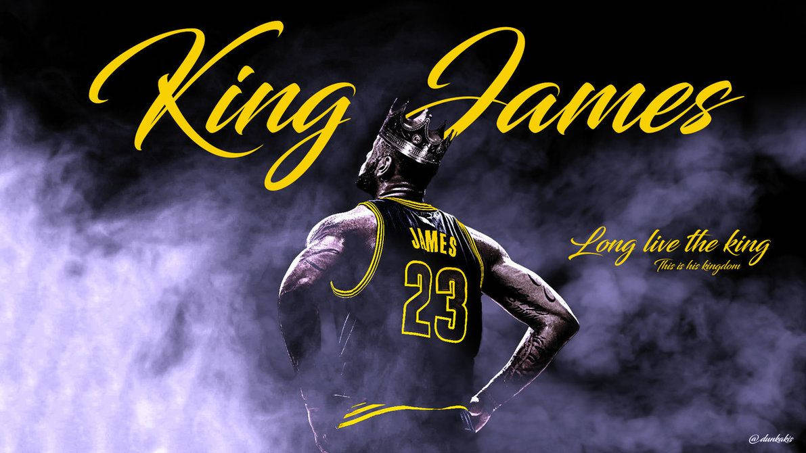

LeBron Raymone James Sr.
American professional basketball player for the Los Angeles Lakers of the National Basketball Association (NBA)

LeBron James
Here is a timeline of the life and career of LeBron James so far
- 1984–Born in Akron, Ohio
- 2003–Drafted as the 1st overall pick
by the Cleveland Cavaliers straight out of high school
- 2004–Wins NBA Rookie of the
Year
- 2006–Leads the Cavaliers to their
first playoff appearance since 1998
- 2007–Takes the Cavaliers to the NBA
Finals for the first time in franchise history
- 2010–Leaves Cleveland to join the
Miami Heat, forming the infamous Big Three
- 2012–Wins his first NBA Championship
and Olympic Gold Medal
- 2013–Wins second NBA Championship and
second consecutive NBA MVP with the Heat
- 2014–Returns to the Cleveland
Cavaliers
- 2016–Brings Cleveland its first NBA
Championship, coming back from 3–1 down against the Warriors
- 2018–Signs with the Los Angeles
Lakers
- 2020–Wins fourth NBA Championship and
Finals MVP with the Lakers
- 2023–Becomes the NBA's all-time
leading scorer
- 2024–Completes his 21st NBA season,
still proving himself as one of the greats in the league